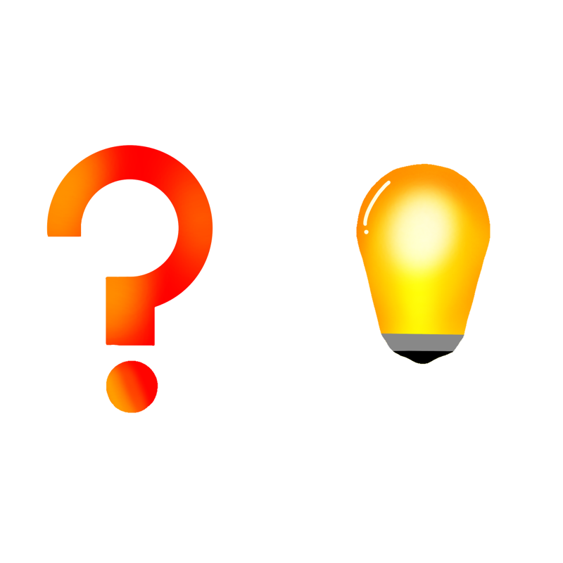

授業で手を挙げたくない！
授業で挙手するとき、嫌だなと思う人がいるだろう、、、そういう時全員がこれをつけていれば解決！、
恥ずかしい思いはしない！
↓完成品
↓使用している様子

構想段階のスケッチ
最初は、カチューシャに？をつけたモノを作ろうとしたその後、自分なりにブラッシュアップした
素材や接続の仕方を考えて、カチューシャはPLA、？マークや電球はアクリル板にイラストを印刷することにした
また、接続の仕方は蝶番を使うことにした
下のイラストはアクリル板にUVプリンターで印刷しようとして描いたものになる
実際はAdobeのIllustratorで描くのでそこまで細かくは描かなかった
イラレで描く時に参考にしたページ

↓Fusion360で作ったカチューシャ

↓イラレで描いたイラスト

イラストデータ（.ai） ↓アクリル板
データ1
データ2